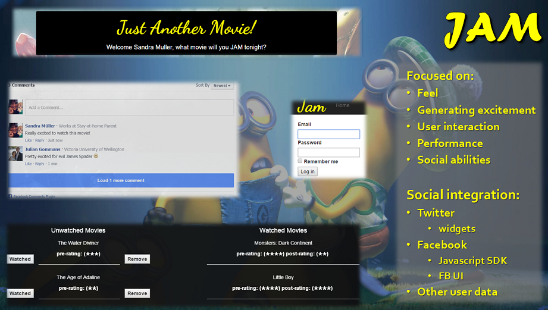

So I recently graduated from Enspiral Dev Academy and part of our final week there was to pitch an idea and work as a group on one of those ideas. I had the good fortune of working on JAM, which stands for Just Another Movie. It was a great concept and one I fully identified with. I always see something and say I want to watch it, but never remember what it was. This site allows you to view trailers for upcoming movies and perform movie searches. From there you can add movies to your list and give them pre and post ratings. You can also discuss movies on your list with others and find out who else is interested in watching a particular movie. Below is a demo of the site in action:
We set out to have a good team experience, to implement our planning effectively and efficiently. We wanted to make the most of our short time to develop this app and give ourselves a solid base to build on after EDA. More than anything, we wanted something that we each felt we owned a part of and were proud to present. We felt like we achieved that. We had great group dynamics and working together was, dare I say, easy. We were clear about roles, responsibilities and goals. Each person knew what they were doing and what they were responsible for and we genuinely enjoyed developing this app.
I did the .NET track at EDA, but jumped into Ruby on Rails as the rest of my team were rubiests and wanted a ruby backend. I used cloud 9 as my IDE. I did all the frontend setup set up through Ruby on Rails. This meant learning some of Rails and gems! I really enjoyed the challenge. I even did some of the erb and set up the get request through our Rails server to get all the trailers for the front end.
I installed twitter-bootstrap to provide a css framework and give the site a little structure. From there I customized everything rather than using a theme. I enjoyed the javascript and using RESTful API's. I loved seeing the UI come together and picking the background images.

A social aspect of the application is that you can like and share the web application. You are able to have on going chats through facebook comments with other users about a movie that you have added to your list. You are also able to see who else wants to watch a particular movie. That's nice if you have a lot of your friends and family using the site. You can view IMDb's twitter list with their current gossip on movies and tv shows. There is so much that you can do on the social media side, as well as build on.
I would have liked to have focused more on web performance, but inoder to do what I needed to do I would have had to learn more ruby so that I could set up the routes to get data from the database or wait until someone could do it for me and there just wasn't enough time. The information available to me was embedded on a few of the pages and thus loaded on a full page refresh rather than dynamically. Javascript all the things!
I've included our slide deck below as a video.